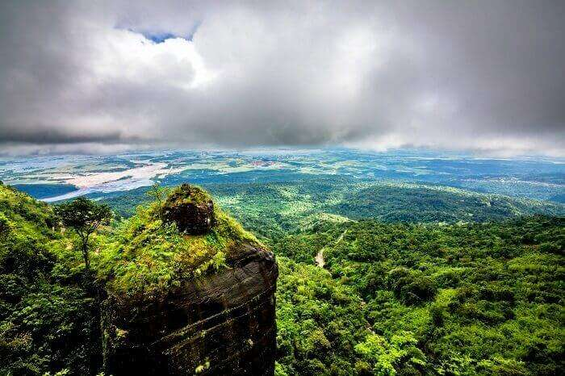
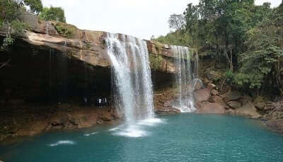
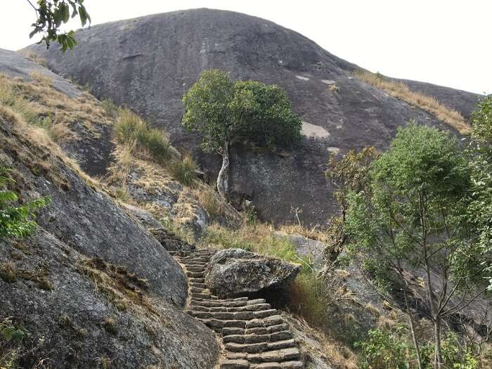
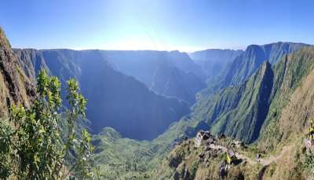

CHERRAPUNJI
Cherrapunjee, also known as Sohra, is a high-altitude town in the northeast Indian state of Meghalaya. It's known for its living root bridges, made from rubber trees. To the northeast, Mawkdok Dympep Valley View Point overlooks verdant gorges. In the surrounding hills, the Noh-Kalikai, Dain-Thlen and Kynrem waterfalls plunge from forested clifftops. South of town, Mawsmai Cave is illuminated to show its stalagmites.
ELEPHANT FALLS

The Elephant Falls are a two-tier waterfall in Shillong, Meghalaya, India. The mountain stream descends through two successive falls set in dells of fern-covered rocks.
KHRANGSURI WATERFALLS
Nestled in the serenity of Jaintia hills, Krang Suri falls is amongst one of the most scenic waterfalls of Meghalaya. The falls is blessed with shimmering blue waters and lush green picturesque surrounding. We reached this place after almost 3 hours drive from Shillong.
KYLLANG ROCK
The Rock which is 5400 ft above sea level and has a width of around 1000 ft is a mammoth block of granite which is part of the Khasi folklore and seems beautiful in its shape. A hike to the top of Kyllang Rock allows you to treasure the marvellous landscape of the surrounding area.
LITULUM
Nation's first-ever Lithium reserves in Karnataka - so far confirmed at 1,600 tonnes - are just a tiny speck. But it is a stash that India wants to rapidly hoard. So a sustained effort is in the making. As the world migrates away from fossil fuels, batteries will be a critical pivot in the shift.